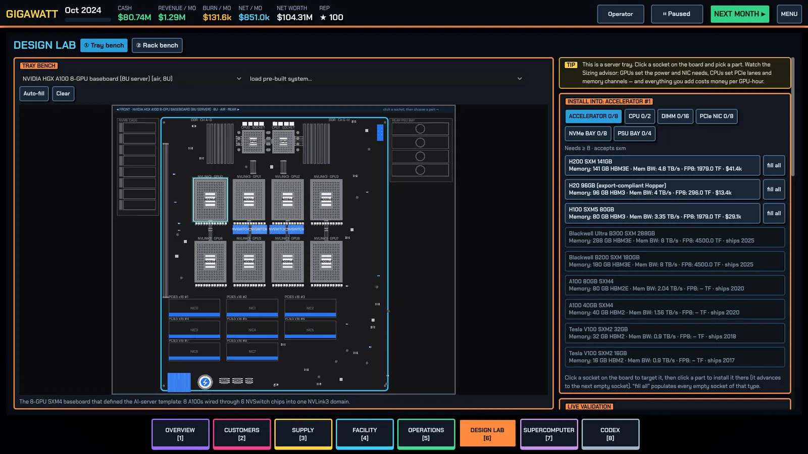
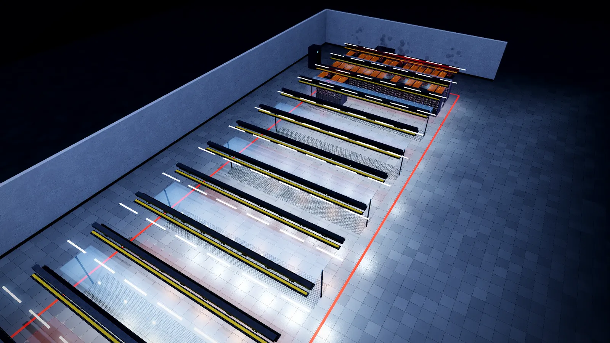

Servers and racks
Trays, racks, the Design Lab, rack density, validation and spares — how the machines you sell are actually made.
There are two ways to get hardware: buy a pre-engineered system (the Procure guided planner's DIY / OEM / turnkey tiers, or ready-made templates from several integrators), or design your own in the Design Lab. Buying a system saves its design automatically, so you can study it, copy it and modify it — a good way to learn.
The tray bench
A tray is a chassis plus parts. Pick a chassis (its cooling class and rack units matter), then click sockets on the board and install parts: accelerators, CPUs, DIMMs, NICs, DPUs, NVMe drives, PSUs. Required slots are marked; Auto-fill populates everything with the first compatible part, and load pre-built system starts you from a known-good design.
Live validation refuses to save a broken tray. It tracks power draw, cost, accelerator count, FP8/BF16 PFLOPS, HBM and PCIe lanes. The Sizing & cost advisor is the teaching tool — it checks, as you build:
- PSUs — capacity must cover the GPU draw with N+1 redundancy: one PSU can fail without taking down an expensive tray. More than N+1 is wasted money.
- PCIe lanes and CPUs — GPUs set the power and NIC needs, CPUs set lanes and memory channels. One CPU starves an 8-GPU tray with eight NICs; two is the standard layout.
- NICs — rule of thumb: one NIC per GPU ("rail-optimized") for training, one per two GPUs for inference. The advisor shows whether you meet the training bandwidth tier customers expect this year.
- Memory — populate all channels, and keep host RAM around half of GPU HBM so checkpointing stays smooth.
- 5-year cost — capex and power per GPU and your break-even hourly cost at full and partial utilization, against what the market pays this year.
The rack bench
A rack is a 42U elevation. Add compute trays in the middle, ToR switches at the top, power and storage at the bottom (zones are hints; the Add button finds the best free spot). Every component has height in U and a power draw, and validation checks units used, weight, cost — and above all kilowatts against the rack's limit.
Rack density is the real limit of the whole game. An 8-GPU H100 tray draws roughly 10 kW; four per rack is already 40 kW, the edge of air cooling. The rack's cooling interface (air / RDHx / DLC / immersion) must match what your hall can serve — see Power and cooling. The validation panel also shows the tray's scale-up domain (how many GPUs NVLink joins into one memory domain), which matters for big-model workloads.


From design to floor
A saved design is only paper. The Warehouse shows, per design, how many racks are ready to deploy and exactly which parts are missing — with an order all missing button that buys everything, spares included. A rack can only be deployed when every part is in the warehouse and the hall has power, cooling headroom and a free slot. Then comes installation and commissioning (burn-in), which finds failed optics and GPUs before customers do. Skipping burn-in ships dead GPUs.
Spares
Parts fail at a steady rate: GPUs, PSUs, NICs, NVMe drives, DIMMs, CPUs and switches all break. A spare on your shelf swaps in within a month; without one, the vendor RMA takes roughly four months — during which the rack misses SLAs and earns nothing while it still depreciates. Orders include the advised spares by default, and the Warehouse's spares table shows have vs advised per part with a one-click top-up. See Incidents and resilience.
Related: Networking and clusters for what happens after the rack is online, and Money and operations for selling racks at end of life.
Found a mistake or something missing? Edit this page on GitHub or ask in Discussions.